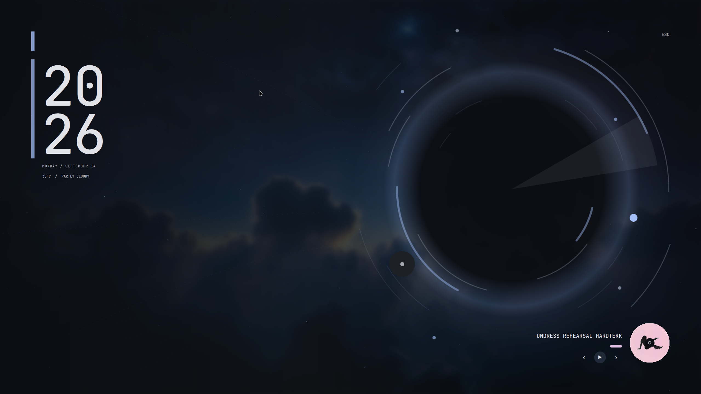

An observatory
you operate.
A Linux desktop with a little gravitational pull.
Built with Quickshell for Niri.
A still study of the black hole
Yes, this is
someone’s desktop.

Five instruments, one shell.
A bar you arrange yourself.
Workspaces, media, time, and system readings, kept together in a bar you can arrange around the way you work.
- Move and reorder your islands
- Choose horizontal or vertical layouts
- Open a tool on the display you’re using
Bigger tools, opened when you need them.
Search, calendar, settings, network, clipboard, and the tools that deserve more than a tiny dropdown. Open what you need, then get back to it.
- Find apps and shell actions by name
- Keep everyday tools in one place
- Set your appearance, controls, and motion

Your wallpapers, in orbit.
Your wallpaper library, laid out as an orbit instead of a grid.
- Browse local and bundled wallpapers
- Preview before applying
- Choose the output you want to change

Music you can bend.
Playback, lyrics, spectrum, and pitch controls live beside the music. Switch between the players your session exposes and shape what you hear.
- Play, pause, skip, and seek
- Read lyrics when available
- Explore audio routing and effects

A real session lock with its own look.
A separate lock process that uses the Wayland session-lock protocol and PAM, with an interface you can customize. Try the preview before your first real lock.
- Separate lock and preview processes
- Customize motion and atmosphere
- Read the first-lock guidance before use

Lock preview
Strange to look at.
Predictable to use.
Astronomy gives Tonantzintla its look: open orbits, imperfect silhouettes and surfaces that unfold instead of snapping open. The controls underneath stay legible and stay put.
Useful first
Every control has one clear destination, and every tool says what it does.
Motion stays out of the way
Surfaces bend and morph, but buttons never move out from under your pointer. Motion can be reduced or turned off in Settings.
Yours to arrange
Choose your apps, fonts, wallpaper, bar layout and motion in Settings.
Install Tonantzintla
Tonantzintla 1.1 runs on Niri with Quickshell. It is tested on Arch Linux, Arch-based distributions and Obarun.
Read the installation guideArtix is intentionally unsupported.
sudo pacman -S --needed git rust git clone https://github.com/deltadasher/Tonantzintla.git cd Tonantzintla ./bin/blackhole install --profile recommended --niri keep --umbra lock ~/.local/bin/blackhole start
Keeps your existing Niri configuration. On Obarun, enable obcommunity first. Read the guide before running.
Questions
Something else? Open an issueIs this a whole Linux distribution?
It’s a desktop shell built with Quickshell for your Wayland session. It brings together a bar, desktop tools, wallpaper and music interfaces, and the Umbra lock screen. Your applications and operating system stay yours.
Which systems does it support?
Niri is the supported compositor. The project is tested on Arch Linux, similar derivatives, and Obarun. Artix is intentionally unsupported. Optional features need their own backends; check the dependency guide for your setup.
Will it replace my Niri configuration?
The commands above use --niri keep to preserve your existing Niri configuration. Choose --niri replace only if you want the bundled configuration. Read the installer’s choices before confirming them.
How do I try the lock screen safely?
Start with blackhole preview-lock. This previews Umbra without locking the compositor or invoking PAM; Escape closes it. A visual preview doesn’t test authentication. Read the Umbra first-lock and recovery guidance before your first real lock.
Where do I start if something isn’t working?
Run blackhole doctor to inspect your setup without changing it, or blackhole daemon logs for recent shell logs. Check the dependencies and existing issues before opening a report.